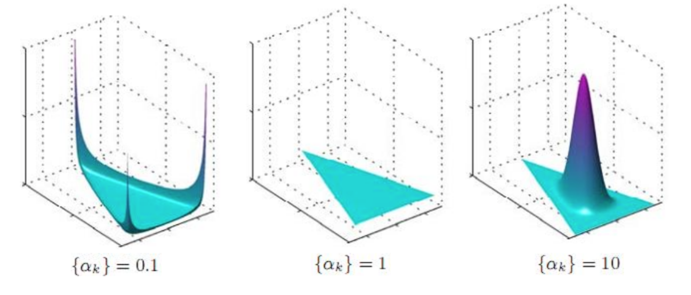
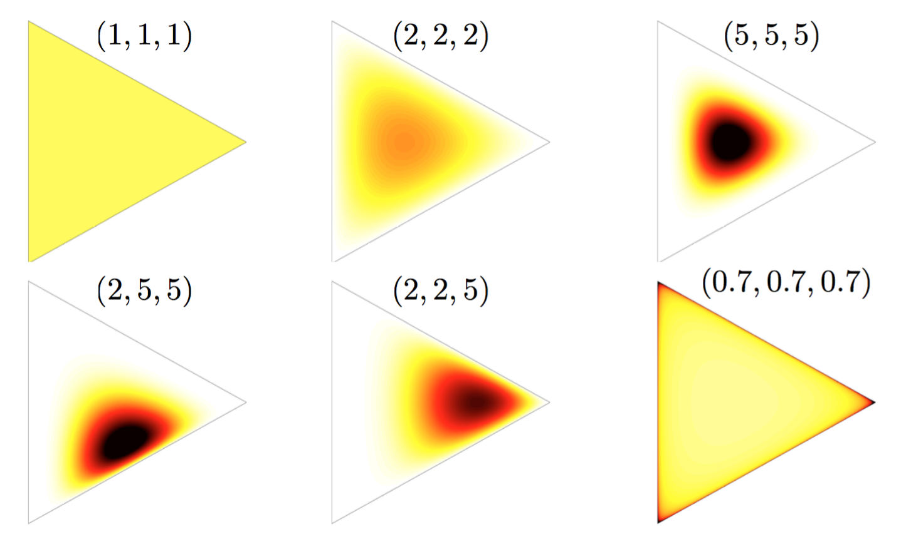

It is a multivariate generalization of the beta distribution. A
PDF:
where the parameter
It's the conjugate prior of the multinomial distribution.
Properties:
In symmetric Dirichlet distribution (where all of the elements making up the parameter vector

General examples:

Dirichlet distribution: https://en.wikipedia.org/wiki/Dirichlet_distribution
Nonparametric Baysian Models: http://videolectures.net/mlss09uk_teh_nbm/
Blei, David M., Andrew Y. Ng, and Michael I. Jordan. "Latent dirichlet allocation." Journal of machine Learning research 3.Jan (2003): 993-1022.